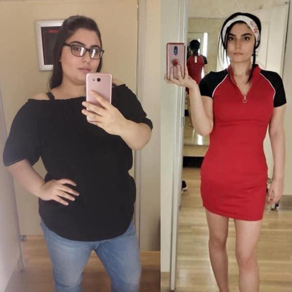
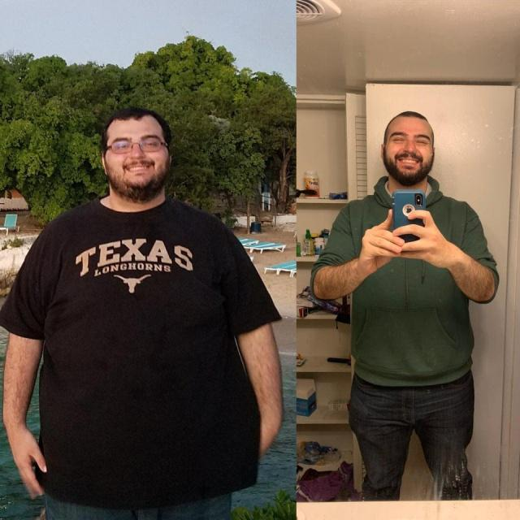
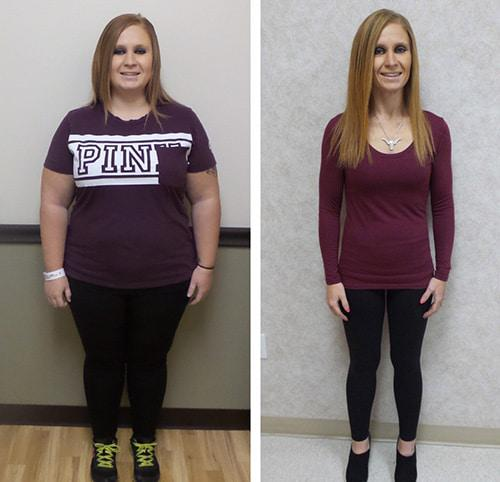
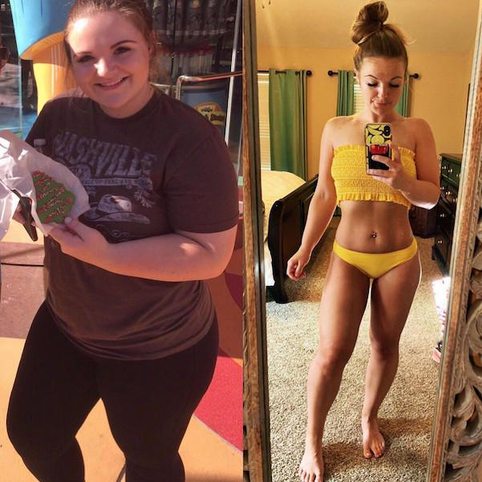

TŁUSZCZ NIE JEST Z ŻYWNOŚCI! MOŻESZ POZBYĆ SIĘ DO 15 KG TŁUSZCZU BEZ CHEMII, GŁODU I OBCIĄŻEŃ FIZYCZNYCH.
Mówi lekarz najwyższej kategorii medycznej (Ireneusz Kowalski).
Diety, ćwiczenia, pigułki i liposukcja są dziś głównymi sposobami walki z
przybieraniem na wadze. Jednak sądząc po tym, że liczba osób otyłych wciąż rośnie,
żaden z nich nie jest naprawdę skuteczny.
Sytuacja zmieniła się, gdy się
pojawiła w Polse
Weight manager.
- środek, który stymuluje naturalną utratę wagi.
Doktor Ireneusz Kowalski
Dyrektor Narodowego Medycznego Centrum Naukowego, doktor nauk medycznych,
pracownik honorowy w Polsce, lekarz ogólny, dietetyk.
Doświadczenie
zawodowe - 31 lata
Co to jest Weight manager?
Jeśli twój organizm ma niedobór witaminy A, jedz pomarańcze, jeśli fosfor, jedz ryby; jeśli witamina C, jedz czarną porzeczkę. Tylko kapsułek Weight manager zawierają wszystkie niezbędne pierwiastki śladowe, które przyczyniają się do spalania tłuszczów w ludzkim ciele. W szczególności tym środkiem jest super przeciwutleniacz, który spala tłuszcz i normalizuje aktywność całego organizmu.
Weight manager: koncentrat warzywny. 2 kapsułek - jedna porcja środku zawiera niezbędną ilość substancji aktywnych, które zwiększają tempo spalania tłuszczu o 10 razy! Udowodniono klinicznie, że Weight manager przyspiesza metabolizm, przywraca aktywność układu hormonalnego, stymuluje regenerację tkanek i tłumi głód. Produkt jest całkowicie naturalny i jest aktywnym stymulatorem naturalnych procesów w ludzkim ciele. Ponieważ spalanie tłuszczu następuje z powodu szybkiego metabolizmu, dieta nie jest wymagana. Zrównoważona dieta + kapsułek Weight manager dwa razy dziennie wystarczają do utrzymania prawidłowego metabolizmu. Intensywna aktywność fizyczna w tym przypadku również nie jest potrzebna. Jeśli chcesz, możesz wykonać dowolne proste ćwiczenia, aby zwiększyć napięcie mięśni.
Główne właściwości Weight manager:
Spalanie tłuszczu
Tłumienie apetytu
Normalizacja tła hormonalnego
Odmłodzenie i oczyszczenie ciała
Efekt tonizujący dzięki spalaniu tłuszczu
Dzięki Weight manager metabolizm się znacznie przyspiesza, dlatego tłuszcz podskórny w obszarach problemowych spala się z dużą prędkością 700 gramów dziennie! Weight manager jest skuteczna nawet w przypadkach, w których wahania hormonalne są przyczyną nadwagi. Jeśli masz nadwagę - ten produkt jest zdecydowanie dla Ciebie!
W Polsce ten produkt pojawił się stosunkowo niedawno, ale zdążył już stać się ulubionym środkiem kulturystów i sportowców, którzy potrzebują szybką utratę masy ciała i utrzymywać niski procent tłuszczu w ciele.
Wynik po 27 dniach przyjmowania Weight manager
Wynik po 30 dniach przyjmowania Weight manager
Wynik po 45 dniach przyjmowania Weight manager
Wynik po 33 dniach przyjmowania Weight manager
Komentarze naukowców:
Doktor Antoni Szymański
dietetyk endokrynolog
Doświadczenie zawodowe - 27 lat
„Najważniejszą rzeczą w odchudzaniu jest nie pogarszanie stanu organizmu. Niestety najpopularniejsze sposoby na odchudzanie nie mogą się tym pochwalić. Bardzo trudno jest stale przestrzegać diety, nie każdy może znieść przedłużoną abstynencję pokarmową. Nie osiągając celu, ludzie ponownie wracają do tabletek lub innych leków odchudzających, z których większość powoduje wielką szkodę dla organizmu, zaburza równowagę hormonalną, funkcję wątroby i tłumi odporność. Utrata masy ciała powinna być naturalna i nie wpływać na wewnętrzne procesy organizmu. Dzisiaj Weight manager - to jedyny środek, który skutecznie radzi sobie z tymi zadaniami bez szkody dla zdrowia. Aktywne mikroelementy Weight manager powodują przyspieszenie metabolizmu i stymulują intensywne spalanie tłuszczu. Ich stężenie w pojedynczej dawce Weight manager (2 kapsułek) poprawia te procesy co najmniej 10 razy. Jestem przekonany, że ten produkt jest jednym z najlepszych środków nowoczesnego żywienia. Jest to również bezpieczny i zaufany produkt, któremu możesz w pełni zaufać".
Magdalena Wiśniewska
dietetyk endokrynolog
Doświadczenie zawodowe - 18 lat
„Kobiety często przychodzą do mnie ze łzami. Próbowały wszystkiego, ale nic nie działało, albo waga znów szybko wracała. Radziłem im, aby nie wpadali w panikę i spróbować jeszcze raz później. Obecnie istnieje lepsze rozwiązanie tego problemu - Weight manager. Nigdy nie było tak łatwo schudnąć. kapsułek te należy przyjmować codziennie bez obawy o swoje zdrowie. Dzięki Weight manager spalisz do 5 kg tygodniowo w całkowicie naturalny sposób. Jest to całkowicie naturalny produkt, który jest odpowiedni dla każdego, niezależnie od płci, wieku i nadwagi. Utratę masy ciała osiąga się tylko poprzez spalanie tłuszczu, a nie odwodnienie organizmu. Weight manager od dawna zyskuje popularność w zachodnich potrawach, a teraz zyskuje coraz większą popularność w Polsce. Osobiście polecam ten lek wszystkim moim pacjentom i za każdym razem słyszę od nich wdzięczność za szczupłą sylwetkę.”
Badania
Wyniki badań laboratoryjnych Weight manager w Stowarzyszeniu Zdrowego Odżywienia:
Grupa osób z nadwagą (100 osób) przyjmowała Weight manager dwa razy dziennie, rano i wieczorem, przed posiłkami. Test trwał miesiąc. W tym przypadku żaden z ochotników nie zmienił swojej zwykłej diety. Podczas badania uzyskano następujące wyniki:
1. Utrata masy tłuszczowej od 12 do 15 kg.
- przy pozbyciu się 15
kg - 95%
- przy pozbyciu się 12 kg - 100%.
*
Utrata w tym przypadku oznacza pozbycie się masy tłuszczowej i jej brak
przez 1 miesiąc.
2. Zauważalna poprawa metabolizmu.
3. Zwiększony ton i aktywność fizyczna.
4. Poprawa czynności wątroby i układu hormonalnego.
Udowodniono, że Weight manager ma silny wpływ na przyspieszenie metabolizmu i
spalanie tłuszczu. kapsułek są zalecane do stosowania przez osoby z
nadwagą, a także osoby z zaburzeniami metabolicznymi.
UWAGA! Uważaj na podróbki! Na terytorium Polski trwa teraz promocja. Spróbuj szczęścia - wygraj 50% zniżki na zamówienia Weight manager!
Cześć, próbowałam pić Weight manager i schudłam tylko 4 kg w ciągu miesiąca (((((
Urszulo, więc źle przeczytałaś sekcję „sposób użycia”.
Przeczytaj ponownie uważnie i zacznij pić lek ściśle według
instrukcji!
Pozdrawiam, Wiktor.
Nie wygrałam 50% zniżki, co powinnam zrobić? Czy mogę spróbować ponownie?
Nie wiem, to niemożliwe, ale mam 50% zniżki))
Właśnie brałam Weight manager i jadłam wszystko, co lubię. I wciąż schudłam 14 kg. Myślę, że Weight manager do odchudzania to najlepsze rozwiązanie, jakie próbowałam! A najfajniejsze jest to, że nie musisz ćwiczyć na siłowni, aby nadać swojemu ciału doskonałą formę. Nie mam na to czasu i pragnienia ... Krótko mówiąc, te kapsułek są tylko darem niebios dla tak leniwych jak ja! Polecam to! Oto moje wyniki:

Zanim zacząłem pić Weight manager, ważyłem 90 kg. W młodości miałem wspaniałą sylwetkę, a wraz z wiekiem tłuszcz pojawiał się na moim brzuchu i biodrach. W wieku 35 lat zdałem sobie sprawę, że pilnie muszę się uporządkować! Przez prawie rok trenowałem intensywnie, ale nie mogłem osiągnąć pożądanego kształtu. Następnie włączyłem Weight manager do mojej codziennej diety i już po kilku tygodniach odzyskałem sylwetkę, która doprowadziła wszystkie kobiety do szaleństwa! Chociaż te kapsułek mają efekt kumulacyjny i stabilizują wagę przez długi czas, wciąż mam kilka pakietów Weight manager))

Nie wiem jak, ale mi Weight manager naprawdę pomogła. Jestem szczęśliwa i dumna z mojego wyniku - minus 16 kg w 4,5 tygodnia. Szybka utrata masy ciała!

Może po prostu musisz mniej jeść? Rozumiem rosnący organizm u dzieci i one potrzebują dużo składników odżywczych. Ale jesteście dorośli - czy nie jesteście w stanie kontrolować siebie?
Danuto, jeśli nie wiedziałaś, że są ludzie, którzy mają
genetyczną predyspozycję do nadwagi, a żadna dieta i
lekarstwo nie mogą od tego uratować. Jeśli nie masz
predyspozycji do nadwagi, masz szczęście, ale zapewniam cię,
że nie wszyscy mają tyle szczęścia, co ty.
Z poważaniem, Ireneusz Kowalski.
Lekarz ma rację! Nic prawie nie jem, ale to nie pomaga. Waga się zatrzymała i nie zmniejsza się
Dziwi mnie, że wiele osób uważa, że tylko dietetycy wiedzą o tym środku. Te kapsułek pomogły mi zrzucić 14 kg sześć miesięcy temu. A teraz chcę powtórzyć ten kurs tylko dla profilaktyki, no cóż, abym mógł się trochę podładować witaminami. Jest to naturalny i bezpieczny koncentrat roślinny. I moi przyjaciele również wiedzą o tych kroplach od dawna, więc to nie jest tajemnica. ZDJĘCIE PRZED I PO


Po co doprowadzać wszystkich do tego samego standardu? Dlaczego wszyscy powinni być szczupli? Na przykład ważę 79 kg przy wzroście 167 i nie wstydzę się tego. Uwielbiam sposób, w jaki wyglądam i czuję się świetnie!
Marto,
moda XXI wieku sprawia, że dziewczyny wpadają w
skrajności i
wyglądają jak modelki. Często wpływa to
negatywnie
na ich zdrowie. Dlatego stworzyliśmy Weight manager -
ten środek
intensywnie spala tłuszcz, zmniejsza wagę, ale
jednocześnie
nie szkodzi zdrowiu i poprawia go tylko dzięki
naturalnym
składnikom i witaminom w swoim składzie.
Z poważaniem, Ireneusz Kowalski.
Koło loterii czy mogę przekręcić tylko raz? Nie miałam szczęścia i nie wygrałam zniżki...( Czy mogę to powtórzyć?

DZIEWCZYNY! PILNIE MUSZĘ ZRZUCIĆ 9 KG !!!!!!!!!! SIEDZIAŁAM W DOMU PRZEZ PÓŁ ROKU I NIE ZAUWAŹYŁAM, JAK PRZTYŁAM. CO ROBIĆ? SOS !! NIE MOGĘ SIEDZIEĆ NA DIETACH, NIE MAM SIŁY, PÓŹNIEJ SIĘ ZRYWAM I JESZCZE WIĘCEJ JEM. SIŁOWNIA NIE JEST RÓWNIEŻ DLA MNIE, BARDZO SIĘ NIE CHCE I NUDNE ...
Hanno,
lenistwo nie jest najlepszą cechą osoby, ale na
szczęście
masz szczęście! Weight manager jest dokładnie tym, czego
potrzebujesz.
Z poważaniem, Ireneusz Kowalski.
Oficjalna strona producenta - czy to jedyne miejsce, w którym można kupić oryginalne kapsułek Weight manager? Czy można je kupić w dowolnym sklepie internetowym?
Agnieszko,
niestety tak. Ponieważ komercyjne apteki
robią
ogromną marżę na kroplach, a ich koszt wzrasta kilka
razy.
Ponadto oszustwa są szeroko rozpowszechnione w
Internecie, a
jeśli kupisz podróbkę, ryzykujesz zdrowie. Na
oficjalnej
stronie producenta można kupić oryginalny i
bezpieczny
produkt Weight manager w najbardziej dostępnej cenie,
czasem także
ze zniżką - jeśli masz szczęście.
Z poważaniem, Doktor Ireneusz Kowalski.
Moja żona też nie może schudnąć. Brała ślub z wagą 53 kg, teraz 68. Najgorsze jest to, że jest ze wszystkiego zadowolona. Prawidłowo piszesz, że bardzo szybko przyzwyczajasz się do nadwagi ((
Stanisławie,
tak, ale jeśli to ci nie odpowiada, zamów
dla niej
kapsułek Weight manager. Zrób jej niespodziankę - nie
musisz nawet
nic mówić, wystarczy wlać ją do herbaty lub
wody - te
kapsułek świetnie sprawdzają się jako suplement
diety! Tak
szybko schudnie, że się zdziwi, jak to się stało.
Będzie miło
dla niej i dla ciebie! Powodzenia!
Z poważaniem, Wiktor.
Paulino, moja rada dla Ciebie - wypróbuj Weight manager, a
przekonasz się, jak skuteczny jest ten środek! Jeśli masz
trochę nadwagę, wystarczy jeden kurs!
Z poważaniem, Doktor Ireneusz Kowalski.
WAŻĘ 97 KG. NIE WIEM JAK JE USUNĄĆ. NIE CHCĘ, ABY PRZEKROCZYŁO ZA 100. CO MAM ROBIĆ ????? POMOCY !!!!!!! CZY MOŻNA ZNALEŹĆ W APTECE Weight manager ??????
Kingo, chyba nie! Ponadto rabat jest ważny TYLKO na zamówienie na stronie. I tu oryginalny produkt))
Urszulo,
ważne jest, aby nie panikować, wszystko można
rozwiązać.
Zacznijmy stopniowo. Po pierwsze, niestety kapsułek
tych nie
można znaleźć w aptece komercyjnej. Wyjaśniłem już,
dlaczego. Po
drugie, zamów Weight manager i postępuj zgodnie z
instrukcjami. I odniesiesz sukces.
Z poważaniem, Doktor Ireneusz Kowalski.
Witam! Jestem matką dwojga dzieci i o ile pamiętam, zawsze staram się schudnąć. Nie mogę być na diecie, dosłownie po kilku dniach załamuję się i przejadam. Nie mam absolutnie czasu na sport. Przeczytałam ten artykuł i nie mogę się doczekać, aby zacząć pić Weight manager. Po prostu nie jest do końca jasne, jak je przyjmować - tylko w czystej postaci, czy można na przykład dodać do soku? Czy wszystko jest szczegółowo opisane w instrukcji? Bez uzależnienia? Jeśli możesz, odpowiedz na moje pytania lub powiedz, gdzie mam o tym przeczytać. Byłabym bardzo wdzięczna.
Cześć! Mam 50 lat i naprawdę chciałam schudnąć. W tym wieku trudno jest schudnąć, ponieważ metabolizm się zwalnia ... Więc zamówiłam również kurs Weight manager i zrzuciłam 19 kg! Zaskoczył mnie efekt! Aż 19 kg w półtora miesiąca !! Nie spodziewałam się takich wyników i dlatego jestem podwójnie szczęśliwa. Dzięki za artykuł. Polecam wszystkim Weight manager 2020 Power.
Fajnie, że przypadkowo dowiedziałam się o Idealice. Nie miałam już nadziei zrzucić wagi i prawie pogodziłam się z tym, że zawsze będę gruba. Ale kiedy zamówiłam te kapsułek i wypiłam jeden kurs, nie rozpoznałam się w lustrze! Zrzuciłam 17 kg! A to dopiero początek, myślę, że po chwili powtórzę kurs jeszcze raz. Te kapsułek są naturalne, co oznacza brak szkody. Czuję się nawet znacznie lepiej. Najlepsze jest to, że nie musisz zmieniać stylu życia i diety. Po prostu nadal żyjesz, jak poprzednio - i odchudzasz się dzięki Weight manager. Nie wiem, jaką osobę wynalazł ten lek, ale wiele dzięki niemu.

To nierealne uczucie, kiedy naprawdę czegoś chciałeś, ale myślałeś, że to prawie niemożliwe. I taki cud. Straciłam już 10 kilogramów i kontynuuję w tym samym tempie. Przyjaciele myślą, że jestem na ścisłej diecie, martwią się o mnie. Ale do tej pory zdecydowałam, że nie powinni nic mówić o Weight manager, niech będzie niespodzianka)))))
Weroniko, nie dziękujcie! To dla nas wielki zaszczyt
pomagać ludziom, ponieważ jesteśmy lekarzami i dbamy o
zdrowie wszystkich.
Z poważaniem, Doktor Ireneusz Kowalski.
Powiedzcie mi, gdzie kupiliście? W aptekach ten środek nie jest na sprzedaż. Chciałabym kupić oryginał, a nie podróbkę. Bo nie będzie rezultatu, a poza tym jest niebezpieczne dla zdrowia.
Jeszcze raz powtarzam, że Weight manager można zamówić TYLKO
na oficjalnej stronie producenta.A dziś masz
świetną okazję, aby zamówić te kapsułek za połowę ceny w
promocji z 50% rabatem. Nie przegap swojej szansy! Aby nie
popełnić błędu i od razu przejść do oficjalnej strony,
wystarczy kliknąć przycisk poniżej „Przejdź do strony
producenta”! Unikalna promocja obowiązuje w szczególności
dla naszych czytelników na podstawie umowy z producentem.
Ale to nie potrwa długo, więc pospiesz się z zamówieniem!
I proszę uważaj na podróbki.
Z poważaniem, Doktor Ireneusz Kowalski.
Weight manager ma wygodną małą butelkę - zawsze noszę ją ze sobą, ma przyjemne kapsułek do smaku. Właśnie zaczęłam je pić, ale już czuję, że zaczęły działać)